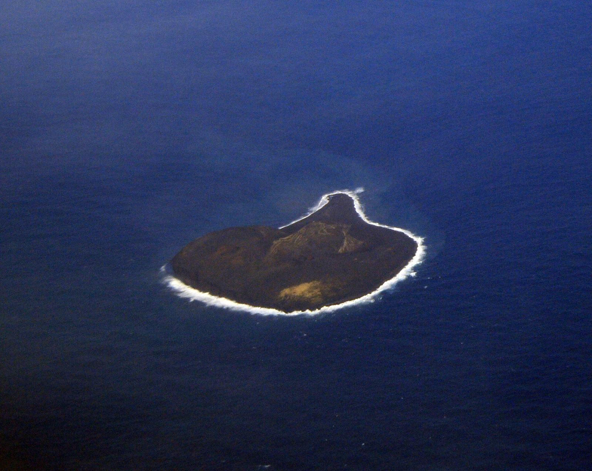

Same five species. One disease. One reef nearly empties.
Two reefs each hold 30 fish of the same five species. A disease kills every fish of one species. One reef keeps most of its fish, and the other loses almost all of them. This page lets you measure biodiversity in two ways and use data to explain why some places hold more species than others.

Two bare rocks. In 1883 the volcano on Krakatoa, in Indonesia, exploded and wiped out all life on the island. In 1963 a new island, Surtsey, rose out of the sea near Iceland with no life on it. Scientists then counted the species that arrived on each island over the next 50 years.
| Feature | Krakatoa | Surtsey |
|---|---|---|
| Land area (km²) | about 28 | about 2.5, eroding to 1.3 |
| Distance to the nearest large landmass (km) | about 40 | about 32 |
| Nearest large landmass | Java and Sumatra (tropical) | Iceland (cold) |
| Bird species after 50 years | 34 | 15 |
| Plant species after 50 years | over 300 | under 70 |
Source: SAS General Biology Lesson 2 case study.
To compare places fairly, you need a way to measure biodiversity. That comes next. In section 05 you return to islands with one factor changed at a time.
Two numbers, not one
The number of different species in a place is its species richness. Krakatoa's 34 bird species give it a higher bird richness than Surtsey's 15.
Richness misses something. Two places can hold the same species in different numbers. How evenly the individuals are shared among the species is the species evenness.
| Species | Reef Alpha | Reef Beta |
|---|---|---|
| Clownfish | 6 | 26 |
| Blue tang | 6 | 1 |
| Yellow tang | 6 | 1 |
| Parrotfish | 6 | 1 |
| Coral beauty | 6 | 1 |
| Total fish | 30 | 30 |
| Number of species | 5 | 5 |
Source: SAS General Biology Candy Coral Reef lab.
Both reefs have a richness of 5 and 30 fish. Only Reef Alpha has high evenness. A diver in Reef Beta sees clownfish almost everywhere and might never spot the other four species.
Many students think more individuals means more biodiversity. A reef with 1,000 clownfish and nothing else has a richness of 1. Biodiversity counts kinds, and how evenly they are shared.
Send a disease through both reefs
The two reefs below hold the fish in Table 2. Draw a random sample of fish, then release a disease that kills one species. The disease runs for 4 seconds, and the clock stops when it is over.
Which reef keeps more of its fish when a disease kills one species?
- Clownfish
- Blue tang
- Yellow tang
- Parrotfish
- Coral beauty
- Ring: a fish in your sample of 5
- Press Draw 5 fish. Look for: the rings in Reef Alpha land on several colours. In Reef Beta they land mostly on red clownfish.
- Press Clownfish, then press Release disease. Look for: red fish fade from both reefs. When the clock stops, press Record.
- Press Start over, press Coral beauty, then press Release disease. Look for: how many fish each reef loses this time. Press Record when the clock stops.
- Press Start over and try blue tang, yellow tang or parrotfish. Look for: whether Reef Beta loses more or fewer fish than with coral beauty.
Use your evidence
An ecosystem that can take a disturbance and keep working has resilience. Reef Alpha always keeps four healthy populations of six fish. Reef Beta can lose almost everything, or almost nothing, by luck. After the clownfish disease it has four species, but only one fish of each, and one more death erases a species.
High richness and high evenness together make an ecosystem resilient. No single loss can wipe out most of it.
Why one pond holds more species
Ecologists surveyed two freshwater ponds in Singapore. The ponds share the same climate, but their surroundings differ. They used the same sampling method in both ponds.
| Measure | Pond A | Pond B |
|---|---|---|
| Pond area (km²) | 5 | 0.5 |
| Aquatic plant species | 18 | 6 |
| Insect species | 24 | 9 |
| Fish species | 12 | 4 |
| Amphibian species | 5 | 1 |
| Total animal species | 41 | 14 |
Source: SAS General Biology Lesson 2 case study.
Your first explanation
New evidence
The ecologists went back to find out what was happening in Pond B. They measured conditions that affect whether organisms survive and breed. Some are abiotic factors, the non-living parts of a habitat. Others are biotic factors, the living parts.
- Aquatic plants give food, oxygen, hiding places and places to breed.
- Plants around a pond shade it and keep the water cooler.
- Aquatic animals need dissolved oxygen for cellular respiration.
- Predators eat smaller animals and lower their numbers.
| Condition | Pond A | Pond B |
|---|---|---|
| Dissolved oxygen (mg/L) | 8.2 | 3.1 |
| Highest water temperature (°C) | 27 | 34 |
| Pond surface covered by plants (%) | 75 | 20 |
| Predator sightings per day | 4 | 13 |
| Food sources found | 12 | 4 |
Source: SAS General Biology Lesson 2 case study.
Saying "Pond B has fewer plants and fewer fish" only shows that two numbers fall together. A strong explanation names the mechanism: fewer plants, fewer hiding places, more fish eaten.
Scaling up: two wetlands
A disease wipes out one insect species from two wetlands. That insect was a main food for many fish and amphibians.
| Measure | Small wetland | Large wetland |
|---|---|---|
| Habitat area (km²) | 0.5 | 8 |
| Resident species | 22 | 105 |
| Other foods available to predators | 2 | 7 |
| Aquatic plant species | 8 | 32 |
Source: SAS General Biology Lesson 2 case study.
Island size and distance
The number of species on an island changes in two ways. New species arrive from the mainland by swimming, flying or floating. Species already there can die out. Over time, arrivals and losses balance, and the number of species levels off.
- Distance: a nearby island receives more arrivals, because the trip is shorter.
- Size: a large island loses fewer species. It holds more habitats and larger populations, and a large population is harder to wipe out.
Singapore is an island too. Rising seas cut it off from the mainland about 10,000 years ago. By 1819 it already lacked elephants, tapirs and rhinoceroses that lived across the region. Small islands cannot hold the large populations these animals need.
Students often think a far island ends up with no species. Species still arrive, only less often. The island levels off at a lower number.
Build your own island in the Island Biogeography simulation (opens in a new tab). Start from Krakatoa, change one setting at a time, and watch where the count levels off.
Revise your explanation
Go back to the first explanation you wrote in section 04. Now use Data set 2 to improve it.
Explain the gap between the ponds
Pond A holds 41 animal species and Pond B holds 14. Pond B has 20% plant cover, 3.1 mg/L of dissolved oxygen, and 13 predator sightings a day.
Prompt: Revise your explanation for why Pond B holds fewer species. Use at least two numbers from Data set 2. Explain how each condition affects the survival or breeding of organisms.
- Pattern (1 mark): You compare the ponds with numbers, such as 41 species against 14.
- Evidence (1 mark): You quote two conditions from Data set 2 with both ponds' values.
- Mechanism (1 mark): You explain how one condition affects survival or breeding.
- For example, low oxygen leaves less for cellular respiration, so some animals cannot survive.
- Second mechanism (1 mark): You explain a second condition the same way.
- For example, less plant cover means fewer hiding places, so predators eat more prey.
Look at your Version 1.0 from Lesson 2b-1. Does your design keep habitat large, connected and full of different plants? Write one change in your project journal.